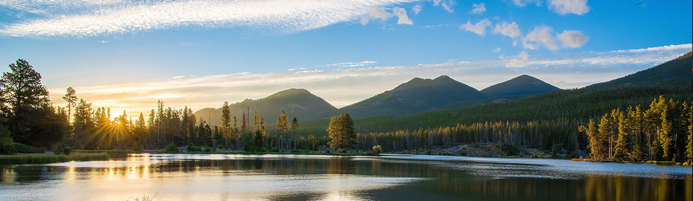
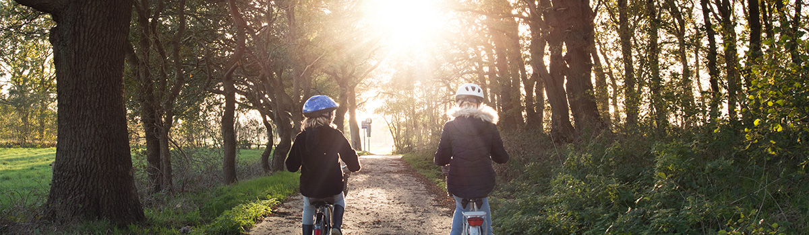

녹색환경경영
유한양행은 사업장의 환경오염물질 저감과 자원 및 에너지 절감을 통한 환경경영체제를 구축하여 2009년 환경부가 지정한 녹색기업으로 인증 받았습니다.
환경경영시스템
오창공장은 기업의 사회적 책임을 다하고, 지속가능한 기업과 사회를 만들기 위해 환경경영시스템인 ISO14001을 구축하고 있습니다. 지속적인 오염물질 감축 및 청정생산체제 구축, 자원의 재활용 등을 주요 환경경영 이슈로 삼아 기업활동과 환경의 조화를 끊임없이 추구하고 있으며, 전 부서별 환경경영을 위한 목표수립 및 지속적 개선을 실시하는 한편, 환경경영시스템의 적합성 및 환경목표 달성도 평가를 통해 환경경영활동을 조직 전반에서 수행하고 있습니다. 임직원들은 저탄소사회 구현에 앞장서기 위해 자발적인 온실가스 저감활동을 실천하고 있으며, 사업장에 대한 온실가스 인벤토리를 구축ㆍ공유하여 저감할 수 있는 시스템을 운영함으로써 기후변화 대응 및 녹색성장을 위한 경영활동을 실천하고 있습니다. 또한, 높아지는 국내외 환경규제 리스크와 이해관계자 만족을 위해 노력하고 있습니다.
녹색기업
규제 중심적인 환경정책에서 벗어나 스스로 사업장의 환경성을 평가하고 개선계획을 실행하여 자율적인 환경경영체제를 구축하고 있습니다. 환경오염물질은 법 기준의 20% 이내로 배출농도를 관리하고 있으며, 방지 시설에 대한 철저한 관리 및 사전점검을 통해 환경리스크를 최소화하기 위해 노력하고 있습니다.
녹색경영활동
유한양행은 임직원들이 자발적 온실가스 저감을 실천하고, 지역사회 저탄소 문화 장착을 위한 녹색경영활동을 지속적으로 수행하고 있습니다.
-
- 미호천 수질 개선 사업 참여
- 금강유역의 미호천 수질 개선을 향상시키기 위해 금강유역
- 주변 기업체와 금강유역환경청과 협약을 체결하여 도랑살리기 및 가꾸기에 참여
- 계룡산 국립공원 파크프렌즈 협약
- 국립공원관리공단과 자연 ∙ 문화 자원의 보전 필요성을 공동으로 인식
- 계룡산 국립공원의 자연환경 보전과 쾌적한 공원 환경 조성을 위한 협약을 체결
- 1사 1하천 가꾸기 운동
- 미호천 지류인 용두천을 자사관리 하천으로 지정
- 복원을 위한 정화식물 식재 수질분석을 실시하여 하천 복원에 힘쓰고 있음
안전보건경영
유한양행은 산업재해 예방을 위해 체계적이고 전문적인 안전보건경영시스템을 구축하여 안전한 작업환경을 유지∙증진하고 있습니다.
안전보건경영시스템
유한양행 오창공장은 안전보건경영시스템 ISO45001 인증 사업장으로 안전경영활동을 운영하고 있습니다. 임직원의 안전을 최우선으로 하여 안전보건경영방침을 준수하고, 안전하고 쾌적한 작업장을 구축하기 위하여 끊임없이 노력하고 있습니다. 또한 유해 위험물질취급에 따른 화재폭발 등 중대산업사고예방하기 위하여 PSM(Process Safety Management)시스템을 구축∙운영하고 있으며, 전 공정에 대한 위험성평가를 실시하여 사전에 위험요소를 발굴하고 이를 개선함으로써 안전한 사업장을 유지하고 있습니다.
무재해 추진현황
1999년부터 시작한 무재해 운동은 제약업계 최초로 2017년 8월 13배수를 달성하여 한국안전보건공단으로부터 인증을 받았습니다. 2019년부터는 무재해 운동 인증이 종료되어 사업장 자율로 전환되었으며, 이에 당사는 무재해 운동을 지속하여 2020년 4월 15배수를 달성하게 되었습니다. 이는 약 21년의 대기록으로 안전한 사업장을 만들고자 한 모든 직원의 실천과 노력의 결실입니다.
안전보건활동
유한양행은 사업장 내에 임직원 안전을 최우선으로 하며, 안전하고 청결한 작업장을 갖추기 위해 다양한 안전 보건 활동을 수행하고 있습니다.
-
- 산업안전보건위원회
- 분기별 1회 이상 산업안전보건 위원회를 실시
- 노사가 함께 심의· 의결을 통해 작업자의 위험 또는 건강
- 관리감독자 교육 강화
- 각 부서별 관리감독자를 대상으로 연간 16시간 이상
- 안전교육으로 안전직무능력향상
- 안전 점검, 유해위험요소 제거
- 공사업체 작업 시 안전교육 및 안전점검을 통한 유해
- 위험요인 제거
- 작업환경측정
- 작업장의 시설 ∙ 설비를 개선
- 쾌적한 작업 환경 조성을 위한 연간 2회 작업환경 측정